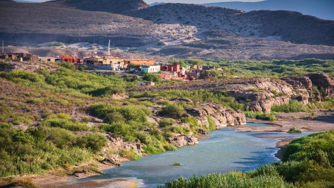

Environment
Lets enjoy the nature.

There are many different things to love about the nature of mexico. Why not start with some fun facts, a lot of people imagine mexico's terrian as a flat desert but it is actually very mountainous, another fun fact is that mexico is in fact home to volcanos and not just one but at least 22 of them, and my last fun fact is that mexico is one of the most biodiverse places on the planet.
Speaking of this biodiversity mexico is home to many splendid species such as monkeys, parrots, jaguars, tapirs, and ant eaters and so, so much more.